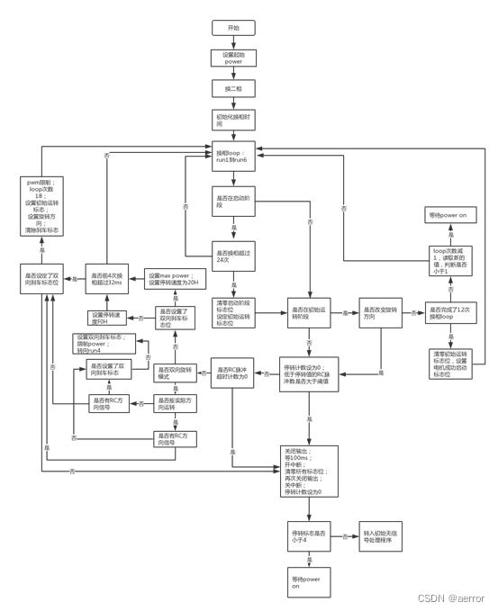

我们继续，
上篇跳到init_start, 现在就到了运行阶段了。 先翻译一下开头的一些相关的注释：
电机控制：
1. 无刷电机控制每360度电角度有6个状态(对应下面的run1-run6六步换相法两两导通，一个悬空用来做反向电动势检查)
2. 一个 0度的前进时机，会在一个换相后，30度的时候过零（zero cross),
然后再过30度到达下一个时机
3. BLHELI 这里每个前进时机名义是15度
4. 电机的PWM 总是互补的
从过零（zero cross)开始的电机的序列：
; - Timer wait: Wt_Comm 15deg ; Time to wait from zero cross to actual commutation
；从过零后到真正换相的等待时间
; - Timer wait: Wt_Advance 15deg ; Time to wait for timing advance. Nominal commutation point is after this
；等待前进时机的时间，换相会在这个之后。
; - Timer wait: Wt_Zc_Scan 7.5deg ; Time to wait before looking for zero cross
；在寻找过零（zero cross)之前的等待时间
; - Scan for zero cross 22.5deg ; Nominal, with some motor variations
；名义上的，带一些电机的变数。
电机启动：
在正常根据bemf(反电动势)信号换相流程之前，有startup启动阶段和初始化运行阶段两个阶段。
开启读代码，首先把所有的moset关掉，把Adc_Conversion_Cnt ，Flags0，Flags1，Demag_Detected_Metric(Metric used to gauge demag event frequency)这几个变量清零。
init_start:
clr IE_EA
call switch_power_off
clr A
setb IE_EA
clr A
mov Adc_Conversion_Cnt, A
mov Flags0, A ; Clear flags0
mov Flags1, A ; Clear flags1
mov Demag_Detected_Metric, A ; Clear demag metric
等1ms, 然后开始adc转换，通过不停的判断ADC的中断标志是否设置（ADC0CN0_ADINT）
直至读取到温度，然后检查温度，供电电压, 限制输出功率的函数，调用前会设置power, Adc_Conversion_Cnt=8， 这个会在check_temp_voltage_and_limit_power判断，要是小8会进行电压的检查，要是大于等于8，就只有做温度的检查， efm8bb2自带一个温度探测。但是目前看代码，电压没有检查，只是要是Adc_Conversion_Cnt < 8 ，调用一次Pwm_Limit会增加16， 直到 Pwm_Limit == 255.
温度这里读平均值来，会和Temp_Prot_Limit（就是blsuite界面的温度保护设置）比较，要是大于这个温度就对Pwm_Limit进行限制，一旦超了，Pwm_Limit就限制到 192，再看看有超了多个TEMP_LIMIT_STEP/2, 最多会把 Pwm_Limit限制成0. TEMP_LIMIT_STEP在blheli-s基本都是10度，个别是5度。
如果温度高于临界值，电机功率限制在75%。 - 如果温度高于阈值加上50摄氏度，电机功率限制在50%。 - 如果温度高于阈值加上100摄氏度，电机功率限制在25%。 - 如果温度高于阈值+150℃，则电机功率限制为0%。
;**** **** **** **** ****
; Motor start beginning
;**** **** **** **** ****
mov Adc_Conversion_Cnt, #8 ; Make sure a temp reading is done
call wait1ms
call start_adc_conversion
read_initial_temp:
jnb ADC0CN0_ADINT, read_initial_temp
Read_Adc_Result ; Read initial temperature
mov A, Temp2
jnz ($+3) ; Is reading below 256?
mov Temp1, A ; Yes - set average temperature value to zero
mov Current_Average_Temp, Temp1 ; Set initial average temperature
call check_temp_voltage_and_limit_power
mov Adc_Conversion_Cnt, #8 ; Make sure a temp reading is done
call wait1ms
call start_adc_conversion
read_initial_temp:
jnb ADC0CN0_ADINT, read_initial_temp
Read_Adc_Result ; Read initial temperature
mov A, Temp2
jnz ($+3) ; Is reading below 256?
mov Temp1, A ; Yes - set average temperature value to zero
mov Current_Average_Temp, Temp1 ; Set initial average temperature
call check_temp_voltage_and_limit_power
mov Adc_Conversion_Cnt, #8 ; Make sure a temp reading is done next time
然后设置启动pwm, set_startup_pwm, 这里等于设置界面的值的50倍
; Set up start operating conditions
clr IE_EA ; Disable interrupts
call set_startup_pwm
mov Pwm_Limit, Pwm_Limit_Beg
mov Pwm_Limit_By_Rpm, Pwm_Limit_Beg
setb IE_EA
开始启动序列，
这里要是48mhz的cpu，这里会设置时钟为48Mhz( Set_MCU_Clk_48MHz).
然后先是判断是不是双向。设置 Flags1.STARTUP_PHASE ， 把Startup_Cnt清零。然后开启换相操作（commutation）， 先是5和6（comm5comm6）， 再是comm6comm1. 跟着初始化timing(这里就是调置一下Comm_Period4x_L/H为一个指定的值， 它是最近四次换相，timer3的计数）， timing是时机的意思，然后跟关计算下一次换相的时机（timing), 第一次是一个虚拟的时机，这个时间由于是无感的电机，也不知道当前的位置，应该是计算不出来的。
; Begin startup sequence
IF MCU_48MHZ >= 1
Set_MCU_Clk_48MHz
ENDIF
jnb Flags3.PGM_BIDIR, init_start_bidir_done ; Check if bidirectional operation
clr Flags3.PGM_DIR_REV ; Set spinning direction. Default fwd
jnb Flags2.RCP_DIR_REV, ($+5) ; Check force direction
setb Flags3.PGM_DIR_REV ; Set spinning direction
init_start_bidir_done:
setb Flags1.STARTUP_PHASE ; Set startup phase flag
mov Startup_Cnt, #0 ; Reset counter
call comm5comm6 ; Initialize commutation
call comm6comm1
call initialize_timing ; Initialize timing
call calc_next_comm_timing ; Set virtual commutation point
call initialize_timing ; Initialize timing
call calc_next_comm_timing
call initialize_timing ; Initialize timing
计算下次换相时间calc_next_comm_timing这个很重要，迟些要详细看，先还是走主流程
下面来到run1, 这里是B-p 打开，然后C n-pwm打开，然后去检测A的比较器，应该就是检测A的反向电动势， A的电压是会从低到高。
先是等待A的compare输出为高
然后等待zero cross过零信号
操作换相comm1comm2
计算下次换相时间
;**** **** **** **** **** **** **** **** **** **** **** **** ****
;
; Run entry point
;
;**** **** **** **** **** **** **** **** **** **** **** **** ****
; Run 1 = B(p-on) + C(n-pwm) - comparator A evaluated
; Out_cA changes from low to high
run1:
call wait_for_comp_out_high ; Wait for high
; setup_comm_wait ; Setup wait time from zero cross to commutation
; evaluate_comparator_integrity ; Check whether comparator reading has been normal
call wait_for_comm ; Wait from zero cross to commutation
call comm1comm2 ; Commutate
call calc_next_comm_timing ; Calculate next timing and wait advance timing wait
; wait_advance_timing ; Wait advance timing and start zero cross wait
; calc_new_wait_times
; wait_before_zc_scan ; Wait zero cross wait and start zero cross timeout
跟着是run2, 和run1基本上是一样的，A p打开， C是n-pwm控制，然后评估B的比较器. 这时B的电动势是会从高到低。 多了一个set_pwm_limit_high_rpm和set_pwm_limit_low_rpm的判断，这个是判断Flags.HIGH_RPM这个是上一次计算换相timing(时机）的时候设置的。操作换相comm2comm3
; Run 2 = A(p-on) + C(n-pwm) - comparator B evaluated
; Out_cB changes from high to low
run2:
call wait_for_comp_out_low
; setup_comm_wait
; evaluate_comparator_integrity
jb Flags1.HIGH_RPM, ($+6) ; Skip if high rpm
lcall set_pwm_limit_low_rpm
jnb Flags1.HIGH_RPM, ($+6) ; Do if high rpm
lcall set_pwm_limit_high_rpm
call wait_for_comm
call comm2comm3
call calc_next_comm_timing
; wait_advance_timing
; calc_new_wait_times
; wait_before_zc_scan
跟着是run3, 也是差不多了, 这里打开A p，B是n-pwm, 然后评估C的电压。C会从low变成high。操作互相comm3comm4
; Run 3 = A(p-on) + B(n-pwm) - comparator C evaluated
; Out_cC changes from low to high
run3:
call wait_for_comp_out_high
; setup_comm_wait
; evaluate_comparator_integrity
jnb Flags1.GOV_ACTIVE, ($+6)
lcall calc_governor_int_error
call wait_for_comm
call comm3comm4
call calc_next_comm_timing
; wait_advance_timing
; calc_new_wait_times
; wait_before_zc_scan
跟着是run4, 打开C p, B是n-pwm, 评估A的电压，A会从高变到低，等到之后，操作换相comm4comm5
; Run 4 = C(p-on) + B(n-pwm) - comparator A evaluated
; Out_cA changes from high to low
run4:
call wait_for_comp_out_low
; setup_comm_wait
; evaluate_comparator_integrity
call wait_for_comm
call comm4comm5
call calc_next_comm_timing
; wait_advance_timing
; calc_new_wait_times
; wait_before_zc_scan
跟着是run5, 打开C p, A是n-pwm, 评估B的电压，B会从low变到high，等到之后，操作换相comm5comm6
; Run 5 = C(p-on) + A(n-pwm) - comparator B evaluated
; Out_cB changes from low to high
run5:
call wait_for_comp_out_high
; setup_comm_wait
; evaluate_comparator_integrity
call wait_for_comm
call comm5comm6
call calc_next_comm_timing
; wait_advance_timing
; calc_new_wait_times
; wait_before_zc_scan
跟着run6, 打开B p, A是n-pwm, 评估C的电压，C会从high变到low，等到之后，操作换相comm6comm1. run60这里会先打开温度的adc, 然后互相之后，计算下次换相操作时机前调用check_temp_voltage_and_limit_power，检查温度，然后限制功率。
; Run 6 = B(p-on) + A(n-pwm) - comparator C evaluated
; Out_cC changes from high to low
run6:
call start_adc_conversion
call wait_for_comp_out_low
; setup_comm_wait
; evaluate_comparator_integrity
call wait_for_comm
call comm6comm1
call check_temp_voltage_and_limit_power
call calc_next_comm_timing
; wait_advance_timing
; calc_new_wait_times
; wait_before_zc_scan
检查是不是在启动阶段（Flags1.STARTUP_PHASE），不是的话跳到正常的各种检查（normal_run_checks）, 否则Pwm_Limit=Pwm_Limit_Beg
然后检查启动的计数（Startup_Cnt, 它开始是0，在上面的每个run的检测电压时wait_for_comp_out_low或wait_for_comp_out_high, 会有机会增加1）。
要是这个计数大于等于24， 那么会清空启动阶段标志（Flags1.STARTUP_PHASE），然后设置初始化运行阶段标志（Flags1.INITIAL_RUN_PHASE），把初始化运行旋转计算（Initial_Run_Rot_Cntd）设置为12,设置Pwm_Limit=Pwm_Limit_Beg, Pwm_Limit_By_Rpm=Pwm_Limit_Beg, 跟着跳到(normal_run_checks).
要是启动的计数（Startup_Cnt）还是小于24的话，那么检查油门输入（New_Rcp），要是油门是大于零的，那么跳回run1, 要是油门零，跳到run_to_wait_for_power_on
; Check if it is direct startup
jnb Flags1.STARTUP_PHASE, normal_run_checks
; Set spoolup power variables
mov Pwm_Limit, Pwm_Limit_Beg ; Set initial max power
; Check startup counter
mov Temp2, #24 ; Set nominal startup parameters
mov Temp3, #12
clr C
mov A, Startup_Cnt ; Load counter
subb A, Temp2 ; Is counter above requirement?
jc direct_start_check_rcp ; No - proceed
clr Flags1.STARTUP_PHASE ; Clear startup phase flag
setb Flags1.INITIAL_RUN_PHASE ; Set initial run phase flag
mov Initial_Run_Rot_Cntd, Temp3 ; Set initial run rotation count
mov Pwm_Limit, Pwm_Limit_Beg
mov Pwm_Limit_By_Rpm, Pwm_Limit_Beg
jmp normal_run_checks
direct_start_check_rcp:
clr C
mov A, New_Rcp ; Load new pulse value
subb A, #1 ; Check if pulse is below stop value
jc ($+5)
ljmp run1 ; Continue to run
jmp run_to_wait_for_power_on
我们接着代码的布局看normal_run_checks，这里就是启动阶段结束后就会来到了，先是检查 不是运行的初始阶段（INITIAL_RUN_PHASE), 要是没设置Flags1.INITIAL_RUN_PHASE，跳到initial_run_phase_done. 否则检查要是换向的刹车阶段跳到DIR_CHANGE_BRAKE也跳到initial_run_phase_done。上面两个条件不成立，那么就递减一下Initial_Run_Rot_Cntd（初始化是12)，检查它是不是0.
要是0的话，就结束这个运行初始化阶段, 把状态设置成电机已启动阶段（Flags1.MOTOR_STARTED），跳回run1.
不是0的话，跳到initial_run_check_startup_rot，要是双向跳到initial_run_continue_run，否则检查油门是不是大于零； 油门不是0的话，跳回run1, 要是零就跳到 run_to_wait_for_power_on。
normal_run_checks:
; Check if it is initial run phase
jnb Flags1.INITIAL_RUN_PHASE, initial_run_phase_done ; If not initial run phase - branch
jb Flags1.DIR_CHANGE_BRAKE, initial_run_phase_done ; If a direction change - branch
; Decrement startup rotaton count
mov A, Initial_Run_Rot_Cntd
dec A
; Check number of initial rotations
jnz initial_run_check_startup_rot ; Branch if counter is not zero
clr Flags1.INITIAL_RUN_PHASE ; Clear initial run phase flag
setb Flags1.MOTOR_STARTED ; Set motor started
jmp run1 ; Continue with normal run
initial_run_check_startup_rot:
mov Initial_Run_Rot_Cntd, A ; Not zero - store counter
jb Flags3.PGM_BIDIR, initial_run_continue_run ; Check if bidirectional operation
clr C
mov A, New_Rcp ; Load new pulse value
subb A, #1 ; Check if pulse is below stop value
jc ($+5)
initial_run_continue_run:
ljmp run1 ; Continue to run
jmp run_to_wait_for_power_on
我们按代码的布局来读一下initial_run_phase_done这个位置，这个位置其实就是电机已启动阶段来的，即正常运行时。 先是把Stall_Cnt清零(这个Stall_Cnt会在run_to_wait_for_power_on_fail时增加1），如果PGM_BIDIR设置了，就跳去run6_check_timeout ， 判断Rcp_Stop_Cnt是不是大于预设值(Temp1），要是的话跳去run_to_wait_for_power_on。
Rcp_Stop_Cnt会有Timer2(每32ms）的中断里检查到油门时自增。要是配置了Pgm_Brake_On_Stop那么，这个Temp1是3(100ms), 否则是250(8秒）. Rcp_Stop_Cnt要是比Temp1大的话，那么认为是没有油门了，跳到run_wait_for_power_on.
initial_run_phase_done:
; Reset stall count
mov Stall_Cnt, #0
; Exit run loop after a given time
jb Flags3.PGM_BIDIR, run6_check_timeout ; Check if bidirectional operation
mov Temp1, #250
mov Temp2, #Pgm_Brake_On_Stop
mov A, @Temp2
jz ($+4)
mov Temp1, #3 ; About 100ms before stopping when brake is set
clr C
mov A, Rcp_Stop_Cnt ; Load stop RC pulse counter low byte value
subb A, Temp1 ; Is number of stop RC pulses above limit?
jnc run_to_wait_for_power_on ; Yes, go back to wait for poweron
没有跳走，就检查 Rcp_Timeout_Cnt是不是超时，它是倒计时的，上一篇有说，初始是10的，每超时一次减1。要是这里看到是零，那么就认为这个也没有油门了，跳到run_to_wait_for_power_on。
run6_check_timeout:
mov A, Rcp_Timeout_Cntd ; Load RC pulse timeout counter value
jz run_to_wait_for_power_on ; If it is zero - go back to wait for poweron
没跳走，就继续往下走，不是双向的话，就是跳到run6_check_speed, 要是双向倒转PGM_DIR_REV，跳run6_check_dir_rev，不行再看看是不是RCP_DIR_REV，是的话，跳到run6_check_dir_change，说是保证转向匹配力的方向。都不满足就跳到run6_check_speed.
在run6_check_dir_change里，会跳回到run4, 这样顺序变了，就会改变方向。
run6_check_dir:
jnb Flags3.PGM_BIDIR, run6_check_speed ; Check if bidirectional operation
jb Flags3.PGM_DIR_REV, run6_check_dir_rev ; Check if actual rotation direction
jb Flags2.RCP_DIR_REV, run6_check_dir_change ; Matches force direction
jmp run6_check_speed
run6_check_dir_rev:
jnb Flags2.RCP_DIR_REV, run6_check_dir_change
jmp run6_check_speed
run6_check_dir_change:
jb Flags1.DIR_CHANGE_BRAKE, run6_check_speed
setb Flags1.DIR_CHANGE_BRAKE ; Set brake flag
mov Pwm_Limit, Pwm_Limit_Beg ; Set max power while braking
jmp run4 ; Go back to run 4, thereby changing force direction
来到run6_check_speed, temp1默认是240, 要有DIR_CHANGE_BRAKE， 修改一下Pwm_Limit为Pwm_Limit_Beg , temp1改为32。 temp1这个是一个时间长短值，跟着temp1会和Comm_Period4x_H 比较大小，要是Comm_Period4x_H 比它小，跳回run1. 否则，看看要是
DIR_CHANGE_BRAKE没有设置的话，就跳到run_to_wait_for_power_on，不是的话，清除DIR_CHANGE_BRAKE的标志，清除PGM_DIR_REV标志，要是RCP_DIR_REV有设置，那么设置PGM_DIR_REV，然后把当前的阶段设置回INITIAL_RUN_PHASE。初始化Initial_Run_Rot_Cntd为18，设置Pwm_Limit = Pwm_Limit_Beg。然后跳加run1.
run6_check_speed:
mov Temp1, #0F0h ; Default minimum speed
jnb Flags1.DIR_CHANGE_BRAKE, run6_brake_done; Is it a direction change?
mov Pwm_Limit, Pwm_Limit_Beg ; Set max power while braking
mov Temp1, #20h ; Bidirectional braking termination speed
run6_brake_done:
clr C
mov A, Comm_Period4x_H ; Is Comm_Period4x more than 32ms (~1220 eRPM)?
subb A, Temp1
jnc ($+5) ; Yes - stop or turn direction
ljmp run1 ; No - go back to run 1
jnb Flags1.DIR_CHANGE_BRAKE, run_to_wait_for_power_on ; If it is not a direction change - stop
clr Flags1.DIR_CHANGE_BRAKE ; Clear brake flag
clr Flags3.PGM_DIR_REV ; Set spinning direction. Default fwd
jnb Flags2.RCP_DIR_REV, ($+5) ; Check force direction
setb Flags3.PGM_DIR_REV ; Set spinning direction
setb Flags1.INITIAL_RUN_PHASE
mov Initial_Run_Rot_Cntd, #18
mov Pwm_Limit, Pwm_Limit_Beg ; Set initial max power
jmp run1 ; Go back to run 1
到这里主流程就结束了，运行其实就是在run1-run6这里不断重复，中间会做一些判断和分支处理。
以下是网上找到的流程图，可以参考：

启动阶段需完成24次换相，超过24次之后进入初始运行阶段，该阶段持续12次换相周期（每个周期6次换相），完成后进入正常运转阶段。
未完待续。。。。
我们下一篇继续详细读一下这个函数，还有计算换相时间，还有各个计时器，比较器相关的一些代码的阅读。